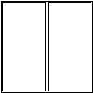
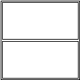
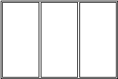
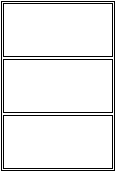
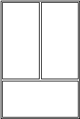
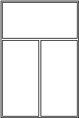
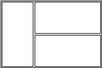
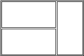

IfcWindowStyleOperationEnum
Definition from IAI: This enumeration defines the basic
configuration of the window type in terms of the number of window panels and
the subdivision of the total window. The window configurations are given for
windows with one, two or three panels (including fixed panels). Windows which are subdivided into more than three panels have to be
defined by the geometry only. The type of such windows is USERDEFINED. Illustration         NOTEHISTORY New Enumeration in IFC
Release 2.0
Documentation improved in IFC Release 3.0
Platform
Enumerator
Description
Figure
SinglePanel
Window with one
panel.
DoublePanelVertical
Window with two panels. The
configuration of the panels is vertically.
DoublePanelHorizontal
Window with two panels. The
configuration of the panels is horizontally.
TriplePanelVertical
Window with three panels. The
configuration of the panels is vertically.
TriplePanelHorizontal
Window with three panels. The
configuration of the panels is horizontally.
TriplePanelBottom
Window with three panels. The
configuration of two panels is vertically and the third one is horizontally at
the bottom.
TriplePanelTop
Window with three panels. The
configuration of two panels is vertically and the third one is horizontally at
the top.
TriplePanelLeft
Window with three panels. The
configuration of two panels is horizontally and the third one is vertically at
the left hand side.
TriplePanelRight
Window with three panels. The
configuration of two panels is horizontally and the third one is vertically at
the right hand side.
UserDefined
user defined operation
type
NotDefined
EXPRESS specification:
|
| Name | Type | Referred through | Express-G | |
| IfcWindowStyle | Entity |
|
Diagram 4 |